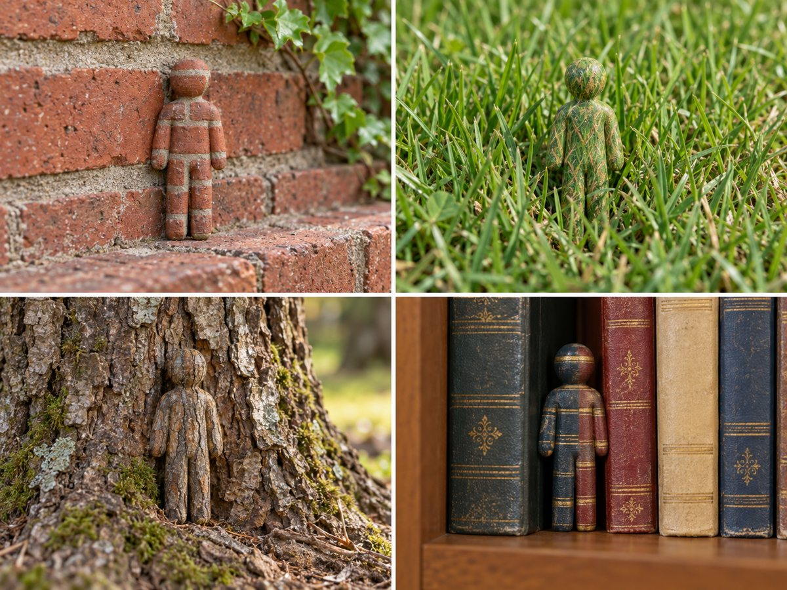
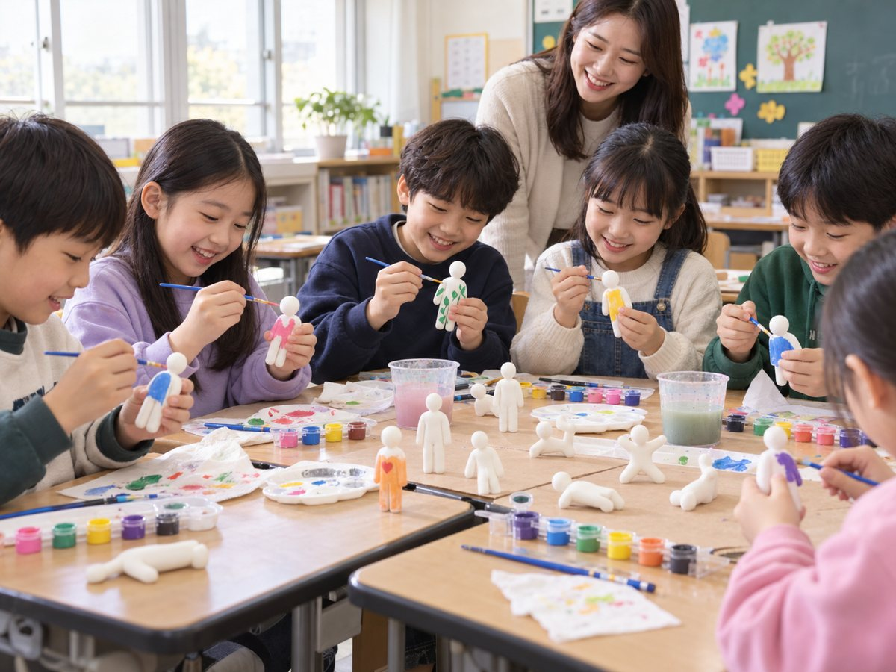
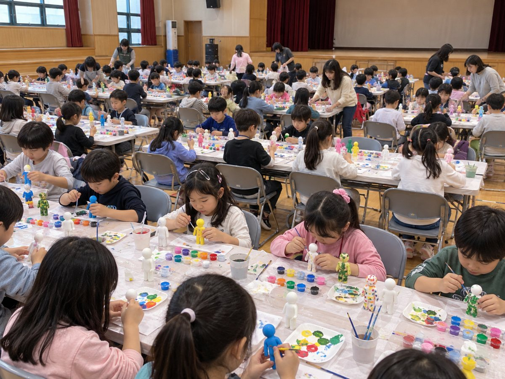
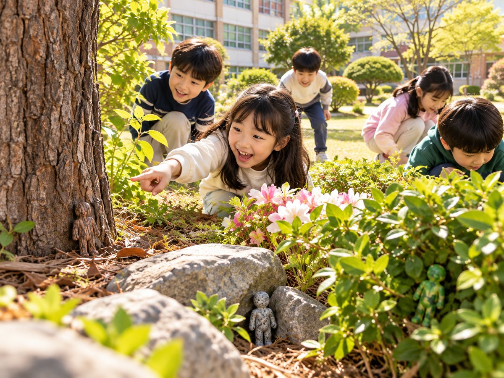
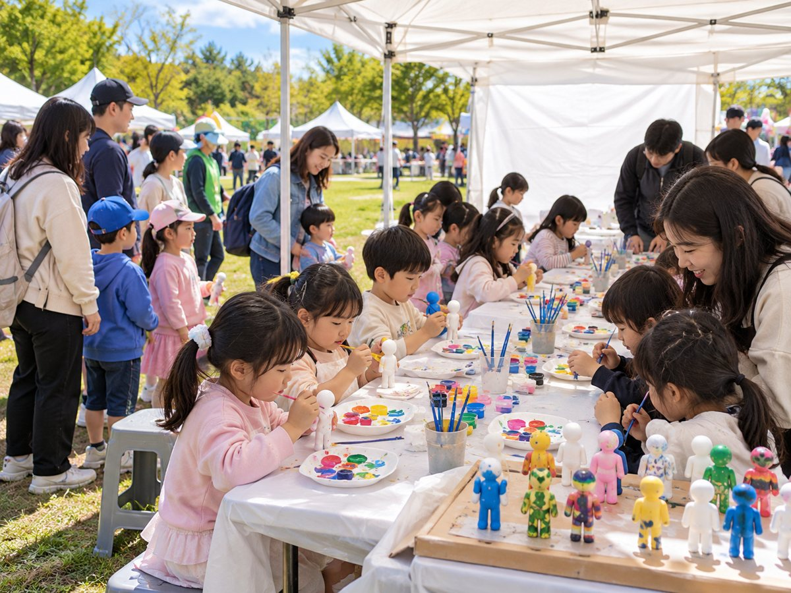

메챠 카멜레온 피규어로 단체 미술 수업·체험 행사 운영하기
아이 한 명이 흰 피규어 하나를 맡아 숨길 장소와 같은 색으로 칠하고, 숨기고, 서로 찾는 조형 교보재입니다. 세트 단위라 인원에 맞춰 준비하기 쉽고, 9종 세트로 준비하면 1인당 재료비가 약 862원입니다. 색칠이 끝나면 숨바꼭질과 팀 대항전으로 바로 이어져 교실 수업, 실내외 행사, 대규모 체험 부스에서 많이 씁니다.
판매자 예전이 직접 작성 · 가격 확인일 2026년 10월 22일 (쿠팡 판매가는 바뀔 수 있습니다)
9종 세트 (자석 추가) 쿠팡에서 보기 중형 8종 + 물감 세트 쿠팡에서 보기 대형 8종 (약 10cm) 쿠팡에서 보기

수업·행사 장면 사진은 AI로 만든 연출 이미지입니다.
왜 단체 수업·행사에 잘 맞나요?
- 1인 1개로 나누기 쉽습니다. 큰 행사에서도 아이마다 낱개 하나씩 건네면 되고, 모둠이나 테이블 단위로 맞추기 좋습니다.
- 규칙이 하나라 설명이 짧습니다. "숨길 곳과 똑같은 색으로 칠하기" 하나만 알려 주면 됩니다.
- 결과물이 모두 다릅니다. 같은 피규어라도 고른 장소에 따라 색과 무늬가 달라져 서로 비교하는 재미가 있습니다.
- 만들기에서 놀이로 이어집니다. 칠한 피규어로 곧바로 숨바꼭질, 팀 대항전, 사진 미션을 할 수 있습니다.
- 상품까지 해결됩니다. 9종 세트에 들어 있는 자석 피스는 게임 상품으로 주기 좋습니다.
- 과학과 연결됩니다. 동물의 보호색과 의태를 직접 해 보는 활동이 됩니다.
- 색칠 없이도 놀 수 있습니다. 흰 피규어를 그대로 숨기고 찾는 숨바꼭질만으로도 실내 레크리에이션 한 판이 됩니다. 색칠 시간이 없는 행사나 쉬는 시간 놀이에 좋습니다.
규모가 작아도 쓰임은 같습니다. 집에서 아이와 하는 놀이, 아이 생일파티 게임, 실내 레크리에이션까지 쓰는 방법은 상품 소개 페이지의 실내 놀이 안내에 따로 정리했습니다.
세트 고르기
9종 세트 (자석 추가) + 접착 테이프 · 6,900원 · 물감·붓 없음
단체 수업과 대규모 행사에 가장 저렴한 구성입니다. 칠하기 도구를 빼서 값을 낮췄고, 피스 9개 가운데 1개는 자석 피스입니다. 아이들에게 피규어를 낱개로 하나씩 나눠 주고 자석 피스는 상품으로 쓰면 교보재 가성비가 가장 좋습니다. 물감이 없어도 흰 피규어 그대로 숨기고 찾는 숨바꼭질은 바로 할 수 있습니다. 정가 10,000원, 무료배송.
9종 세트 쿠팡에서 보기중형 8종 + 아크릴 물감 12색 + 붓 2개 + 컷팅 양면 테이프 · 약 8cm · 8,900원
물감과 붓이 함께 들어 있는 세트입니다. 기관에 물감이 없을 때 이 세트로 물감을 마련하고, 나머지 인원은 9종 세트로 채우는 조합을 추천합니다.
중형 물감 세트 쿠팡에서 보기대형 8종 · 약 10cm · 물감 미포함 · 8,910원
크기가 커서 무늬를 따라 칠하기 쉽고, 숨겼을 때 위장 효과가 잘 보입니다. 고학년이나 소규모 심화 수업에 맞습니다.
대형 8종 쿠팡에서 보기추천 조합
- 물감이 없는 경우 · 중형 물감 세트로 물감 12색과 붓을 마련하고, 나머지 인원은 9종 세트로 채웁니다. 30명이면 물감 세트 1개 + 9종 세트 3개 = 8,900원 + 20,700원 = 29,600원. 피규어 8 + 24 = 32개, 상품용 자석 피스 3개가 생깁니다.
- 기관에 아크릴 물감이 이미 있는 경우 · 9종 세트만 사는 것이 가장 저렴합니다. 30명이면 4세트 = 27,600원. 피규어 32개와 상품용 자석 피스 4개가 생깁니다.
물감 12색 한 세트는 교사가 팔레트에 조금씩 덜어 주면 30명 정도가 함께 쓸 수 있습니다. 더 넉넉히 쓰고 싶다면 9종 세트 1개를 중형 물감 세트 1개로 바꾸세요. 2,000원 차이로 물감 12색과 붓 2개가 더 생깁니다.
수량·예산 계산
기준은 아이 1명 = 피규어 1개입니다. 대형·중형은 세트당 피규어 8개, 9종 세트도 자석 피스 1개를 상품으로 빼 두면 아이들에게 나눌 피규어가 8개입니다. 그래서 필요한 세트 수는 모두 인원 ÷ 8을 올림한 값입니다. 금액은 2026년 10월 22일 쿠팡 판매가(무료배송)로 계산했습니다.
| 인원 | 9종 세트만 (물감 있는 기관) | 물감 세트 + 9종 세트 (물감 없는 경우) | 대형 8종만 (물감 별도) | 중형 물감 세트만 |
|---|---|---|---|---|
| 10명 | 2세트 · 13,800원 피규어 16 · 자석 2 | 물감 1 + 9종 1 · 15,800원 피규어 16 · 자석 1 | 2세트 · 17,820원 | 2세트 · 17,800원 |
| 20명 | 3세트 · 20,700원 피규어 24 · 자석 3 | 물감 1 + 9종 2 · 22,700원 피규어 24 · 자석 2 | 3세트 · 26,730원 | 3세트 · 26,700원 |
| 30명 | 4세트 · 27,600원 피규어 32 · 자석 4 | 물감 1 + 9종 3 · 29,600원 피규어 32 · 자석 3 | 4세트 · 35,640원 | 4세트 · 35,600원 |
| 50명 | 7세트 · 48,300원 피규어 56 · 자석 7 | 물감 2 + 9종 5 · 52,300원 피규어 56 · 자석 5 | 7세트 · 62,370원 | 7세트 · 62,300원 |
| 100명 | 13세트 · 89,700원 피규어 104 · 자석 13 | 물감 4 + 9종 9 · 97,700원 피규어 104 · 자석 9 | 13세트 · 115,830원 | 13세트 · 115,700원 |
| 200명 | 25세트 · 172,500원 피규어 200 · 자석 25 | 물감 7 + 9종 18 · 186,500원 피규어 200 · 자석 18 | 25세트 · 222,750원 | 25세트 · 222,500원 |
- "물감 세트 + 9종 세트" 열은 중형 물감 세트를 30명당 1개로 넣고 나머지를 9종 세트로 채운 값입니다.
- 피규어 1개당 가격: 9종 세트 약 862원(6,900 ÷ 8, 자석 피스를 상품으로 둘 때), 9개를 모두 아이들에게 나누면 약 767원(6,900 ÷ 9), 대형 약 1,114원(8,910 ÷ 8), 중형 물감 세트 약 1,113원(8,900 ÷ 8).
- 9개를 모두 나눈다면 세트 수는 인원 ÷ 9 올림입니다. 100명이면 12세트 82,800원, 200명이면 23세트 158,700원입니다.
- 남는 피규어는 교사 시범용이나 파손·분실 대비용으로 쓰기 좋습니다.
- 9종 세트와 대형 세트에는 물감과 붓이 없습니다. 붓은 조합과 상관없이 아이마다 하나씩 따로 준비하는 것을 권합니다.
- 가격은 쿠팡 판매가 기준이라 바뀔 수 있습니다. 주문 전에 상품 페이지에서 확인해 주세요.
수업 진행안

수업·행사 장면 사진은 AI로 만든 연출 이미지입니다.
40분 1교시 (유치원·초등 저학년, 방과후 1회차)
| 도입 · 5분 | 숨바꼭질 게임 메챠 카멜레온을 소개합니다. "하얀 몸에 배경색을 칠해 숨는 게임"이라고만 말해도 충분합니다. 피규어를 1인 1개씩 나눕니다. |
|---|---|
| 숨길 장소 관찰 · 5분 | 교실에서 숨길 곳 하나를 고르고, 그 자리의 색과 무늬를 살펴봅니다. 세로로 긴 곳엔 서 있는 포즈, 바닥엔 엎드리거나 웅크린 포즈가 잘 어울립니다. |
| 색칠 · 15분 | 물감을 섞어 배경색을 만들고 얇게 칠합니다. 시간이 짧으면 바탕색 하나와 무늬 한 가지만 그리게 합니다. |
| 숨기기 · 5분 | 겉면이 마른 피규어부터 숨깁니다. 다른 모둠은 그동안 뒤돌아 있거나 복도에서 기다립니다. |
| 찾기 게임 · 7분 | 제한 시간 안에 다른 모둠의 피규어를 찾습니다. 찾은 개수를 칠판에 적습니다. |
| 정리·발표 · 3분 | 모든 피규어를 회수해 개수를 확인하고, 끝까지 안 찾힌 피규어의 주인이 비결을 한 문장으로 말합니다. |
80분 블록 (초등 중·고학년, 미술+과학 융합)
| 도입 · 8분 | 게임 소개, 1인 1개 배부, 오늘 규칙 안내. |
|---|---|
| 숨길 장소 관찰 · 12분 | 숨길 장소를 정하고 색과 무늬를 간단히 스케치합니다. 장소에 맞는 포즈를 고릅니다. |
| 색칠 · 25분 | 색 혼합으로 배경색을 맞추고 무늬까지 따라 그립니다. 얇게 두세 번 나눠 칠합니다. |
| 건조 시간 + 과학 이야기 · 10분 | 피규어를 건조 자리에 세워 두고 동물의 보호색과 의태 사례를 함께 이야기합니다. |
| 숨기기 · 8분 | 모둠별로 교대해 숨깁니다. 교사는 숨긴 개수를 기록합니다. |
| 찾기 게임 · 10분 | 아래 연계 게임 중 하나로 진행합니다. |
| 정리·발표 · 7분 | 회수와 개수 확인, 베스트 위장 발표와 자석 피스 상품 전달, 소감 나누기. |
이 수업에서 배우는 것
- 관찰력 · 익숙한 장소의 색과 무늬를 자세히 보는 연습이 됩니다.
- 색 혼합 · 물감 몇 가지를 섞어 원하는 색을 만드는 과정을 직접 겪습니다.
- 보호색·의태 (과학 연계) · 카멜레온, 대벌레, 가자미처럼 주변에 섞이는 동물과 연결해 설명하기 좋습니다.
- 협동 · 모둠이 같은 장소를 맡아 역할을 나누고, 찾기 게임에서 함께 작전을 세웁니다.
실내 행사 (강당·체육관·도서관)

- 긴 테이블에는 비닐이나 신문지를 깔고, 4~6명마다 물감 접시와 물통을 하나씩 둡니다.
- 책장, 커튼, 게시판, 화분 등 숨김 구역을 미리 정해 두면 숨기는 시간이 줄어듭니다.
- 색칠 테이블과 숨김 구역을 떨어뜨려 두면 물감이 묻은 손으로 행사장을 돌아다니는 일이 적습니다.
- 인원이 많으면 반이나 조별로 시간을 나눠 찾기 게임을 교대로 진행합니다.
실외 행사 (운동장·공원·화단)

- 나무껍질, 돌, 잔디, 흙처럼 무늬가 많은 곳은 숨기기에 잘 맞습니다. 초록·갈색·회색 계열 물감을 넉넉히 준비하세요.
- 세트에 들어 있는 테이프를 뒷면에 붙이면 나무나 벽에 고정하기 좋습니다.
- 숨김 구역은 줄이나 콘으로 범위를 표시해 아이들이 행사장 밖으로 나가지 않게 합니다.
- 찾기가 끝나면 숨긴 개수와 회수한 개수를 꼭 맞춰 봅니다. 숨긴 자리를 사진으로 찍어 두면 회수가 쉽습니다.
- 비가 올 때를 대비해 실내 대체 장소를 함께 정해 두세요.
대규모 행사·체험 부스 운영 팁
어린이날 행사, 지역 축제, 박람회 체험 부스처럼 짧은 시간에 많은 아이가 오가는 자리에서 쓰는 방법입니다. 이런 자리는 아이마다 피규어 낱개 하나씩 나눠 주는 방식이 잘 맞고, 9종 세트로 준비하면 비용이 가장 적게 듭니다.

- 회전율 · 색칠 자리와 숨기기·찾기 자리를 나눕니다. 회차별 인원을 정하고 번호표를 나누면 대기 줄이 짧아집니다. 짧은 회차라면 바탕색 하나와 점·줄무늬 정도로 끝나는 예시 작품을 보여 주세요.
- 건조 시간 · 칠한 직후에는 옮기지 말고 건조 선반이나 쟁반에 세워 둡니다. 건조하는 동안 다음 순서인 찾기 게임에 참여하게 하면 자리가 금방 납니다.
- 이름표 · 피규어 발바닥이나 뒷면에 네임펜으로 이름을 쓰거나 마스킹테이프 이름표를 붙입니다. 건조 선반에서 섞여도 주인을 찾기 쉽습니다.
- 물감 덜어 쓰기 · 물감통째로 주지 말고 진행자가 팔레트나 종이접시, 계란판 칸에 조금씩 덜어 줍니다. 물감이 덜 남고 바닥에 흘리는 일이 줄어듭니다.
- 앞치마와 물 · 아크릴 물감은 수성이라 마르기 전에는 손·책상·옷에 묻어도 물로 쉽게 씻깁니다. 다만 마르고 나면 잘 지워지지 않으니, 옷에 묻으면 바로 물로 헹구도록 물통과 물티슈를 가까이 두고 앞치마나 토시를 준비합니다.
- 상품 · 9종 세트의 자석 피스를 모아 두었다가 회차별 베스트 위장상으로 건네면 따로 상품을 사지 않아도 됩니다.
- 대기 줄 놀이 · 완성작을 부스 한쪽 배경판에 숨겨 두고 "몇 개 숨어 있을까?" 판을 세워 두면 기다리는 아이들도 참여할 수 있습니다.
연계 게임 아이디어
1. 교실 숨바꼭질
반을 두 팀으로 나눕니다. 한 팀이 숨기는 동안 다른 팀은 복도에서 기다리고, 제한 시간 3분 안에 찾은 개수를 셉니다. 역할을 바꿔 한 번 더 하고 합계를 비교합니다.
2. 팀 대항 위장 대결
모둠마다 같은 종류의 장소(예: 책장, 창틀)를 하나씩 배정합니다. 상대 팀이 그 장소에서 피규어를 모두 찾을 때까지 걸린 시간을 재고, 오래 버틴 팀이 이깁니다.
3. 보물찾기 지도
숨긴 사람이 교실이나 행사장 지도에 대략의 구역만 표시합니다. 찾는 사람은 지도를 들고 그 구역 안에서 찾습니다. 공간 감각과 지도 읽기 연습이 됩니다.
4. 사진 찾기 미션
숨긴 모습을 사진으로 찍어 화면이나 출력물로 보여 줍니다. 아이들은 사진 속 장소를 알아내 실제 피규어를 찾아옵니다. 대기 줄이 긴 행사에서도 쓰기 좋습니다.
5. 투표로 뽑는 베스트 위장상
찾기가 끝나면 모든 작품을 원래 자리에 다시 두고 스티커로 투표합니다. 베스트 위장상 말고도 색 혼합상, 아이디어상처럼 상을 여러 개 두면 더 많은 아이가 칭찬받습니다. 상품으로는 9종 세트의 자석 피스를 쓰면 됩니다.
6. 스토리 미션
"카멜레온 요원들이 학교 곳곳에 숨어 있다" 같은 이야기를 들려주고 미션 카드를 뽑게 합니다. "빨간 물건 옆에 숨기", "바닥에서 30cm 위에 숨기"처럼 조건에 맞춰 칠하고 숨깁니다. 국어·창의 활동과 묶기 좋습니다.
안전·준비물
안전
- 아크릴 물감은 교사나 보호자의 지도 아래 사용합니다. 입에 넣지 않게 하고, 활동이 끝나면 손을 씻습니다.
- 아크릴 물감은 수성입니다. 마르기 전에는 손이나 책상, 옷에 묻어도 물로 쉽게 씻겨 부담이 적습니다. 피규어에 칠한 물감은 완전히 마르면 물에 잘 지워지지 않아 위장 색이 그대로 유지됩니다. 옷에 묻었다면 마르기 전에 바로 물로 헹궈 주세요.
- 실외에 오래 둘 피규어는 물감이 마른 뒤 투명 바니시를 덧바르는 것을 선택할 수 있습니다. 바니시 작업은 어른이 환기되는 곳에서 해 주세요.
- 피규어는 국내에서 PLA로 3D 프린팅해 만듭니다. 3D 프린팅 특성상 표면에 얇은 적층 결이 있을 수 있습니다. 물감을 얇게 두세 번 나눠 칠하면 고르게 덮기 좋습니다.
준비물 체크리스트
- 피규어: 1인 1개 + 시범·여유분
- 아크릴 물감: 중형 물감 세트에 12색 포함, 9종·대형 세트는 별도 준비
- 붓: 1인 1개 권장 (중형 물감 세트에는 2개 포함)
- 팔레트 또는 종이접시, 물통, 휴지·물티슈
- 책상 비닐이나 신문지, 앞치마
- 네임펜이나 마스킹테이프 이름표
- 테이프 (9종 세트에 접착 테이프, 중형 물감 세트에 컷팅 양면 테이프 포함)
- 타이머, 찾은 개수 기록지, 상품 (9종 세트 자석 피스)
피규어 포즈와 크기, 대형·중형 구성은 메챠 카멜레온 피규어 상품 소개에 정리해 두었습니다.
자주 묻는 질문
단체 수업에는 몇 세트를 사야 하나요?
아이 한 명에 피규어 한 개가 기준입니다. 어느 세트든 아이들에게 나눌 피규어를 세트당 8개로 보고 인원 ÷ 8을 올림하면 됩니다. 30명이면 4세트(32개)로 2개가 남습니다.
가장 저렴하게 준비하려면 어떤 세트를 사야 하나요?
물감이 있는 기관이라면 9종 세트만 사는 것이 가장 저렴합니다(30명 4세트 27,600원). 물감이 없다면 중형 물감 세트 1개에 나머지를 9종 세트로 채우세요(30명 29,600원).
9종 세트의 자석 피스는 어디에 쓰나요?
자석이 들어간 피스 1개가 추가된 구성입니다. 베스트 위장상이나 미션 성공 상품으로 주기 좋습니다. 상품으로 두면 피규어 1개당 약 862원, 9개를 모두 나누면 약 767원입니다.
단체로 많이 사려면 어떻게 하나요?
쿠팡 상품 페이지에서 필요한 수량을 골라 주문하시면 됩니다. 수량이나 일정 관련 문의는 쿠팡 상품 페이지의 판매자 문의로 '예전'에게 남겨 주세요.
몇 살부터 할 수 있나요?
붓을 쥐고 칠할 수 있는 유치원생 이상을 권장합니다. 어린 연령은 교사가 물감을 덜어 주고 한두 가지 색으로 단순하게 칠하게 하세요.
아크릴 물감은 얼마나 지나야 마르나요?
얇게 칠하면 보통 수십 분 안에 겉면이 마릅니다. 두껍게 칠했거나 습한 날에는 더 걸릴 수 있으니 건조 시간에 할 이야기나 활동을 함께 준비해 두세요.
물감 세트 하나로 몇 명이 쓸 수 있나요?
교사가 팔레트에 조금씩 덜어 주면 12색 한 세트로 30명 정도가 쓸 수 있습니다. 넉넉히 쓰려면 9종 세트 1개를 중형 물감 세트 1개로 바꾸세요. 2,000원 차이로 물감과 붓 2개가 더 생깁니다.
물감이 손이나 옷에 묻으면 어떻게 하나요?
아크릴 물감은 수성이라 마르기 전에는 물로 쉽게 씻깁니다. 옷에 묻으면 마르기 전에 바로 물로 헹궈 주세요. 피규어에 칠한 물감은 완전히 마르면 물에 잘 지워지지 않아 위장 색이 유지됩니다.
색칠하지 않고도 할 수 있나요?
네. 흰 피규어를 그대로 숨기고 찾는 숨바꼭질만으로도 놀 수 있습니다. 물감이 들어 있지 않은 9종 세트로 바로 시작하기 좋습니다.
실외 행사에서 써도 되나요?
화단, 나무, 돌처럼 무늬가 많은 실외 공간은 숨바꼭질에 잘 맞습니다. 오래 둘 피규어는 마른 뒤 투명 바니시를 덧바르는 것을 선택할 수 있고, 게임이 끝나면 개수를 세어 모두 회수해 주세요.
색칠한 피규어를 다시 쓸 수 있나요?
피규어에 칠한 아크릴 물감은 완전히 마르면 물에 잘 지워지지 않으니 다른 장소용으로 쓰려면 새 배경색을 덧칠하세요. 수업이 끝나면 아이들이 각자 가져가게 하는 경우가 많습니다.
9종 세트 (자석 추가) 쿠팡에서 보기 중형 8종 + 물감 세트 쿠팡에서 보기 대형 8종 (약 10cm) 쿠팡에서 보기
수업·행사 장면 사진은 AI로 만든 연출 이미지입니다. 게임 정보 출처: Gematsu, Nintendo. 메챠 카멜레온은 2026년 6월 PC, 2026년 9월 닌텐도 스위치 2로 나온 숨바꼭질 파티 게임이며, 이 피규어는 그 놀이를 손으로 해 볼 수 있게 만든 판매자 예전의 상품입니다.